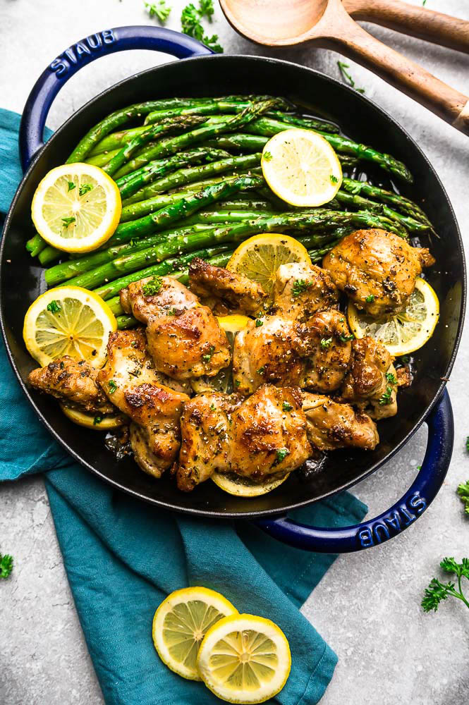

Lemon Garlic Chiken Recipe

Description
Few pairings have the delightfully bright and savory quality of lemon and garlic. The warmth of pungent garlic combined with the zesty presence of lemon is a match made in heaven — especially when it comes to chicken. Take your pick from chicken thighs tossed with thyme sprigs and shallots or Cheddar-stuffed breasts topped with seasoned breadcrumbs. We've gathered our best lemon garlic chicken recipes that showcase how these simple ingredients can create magic in your kitchen.
Ingredients
- 2 tablespoons vegetable oil
- 4bone-in, skin-on chicken wings
- salt and pepper to taste
- 4 garlic cloves, minced
- half cup dry wite wine
- 1 cup chiken broth
- 3 tablespoons fresh lemon juice
- 2 tablespoons butter or margarine
Steps
- Turn on a multi-functional pressure cooker
- Season chicken thighs with salt and pepper
- Add onion and sauté for 1 minute.
- Return chicken Instant Pot®. Close and lock the lid.
- Release pressure using the natural-release method
- Serve chicken drizzled with the sauce.